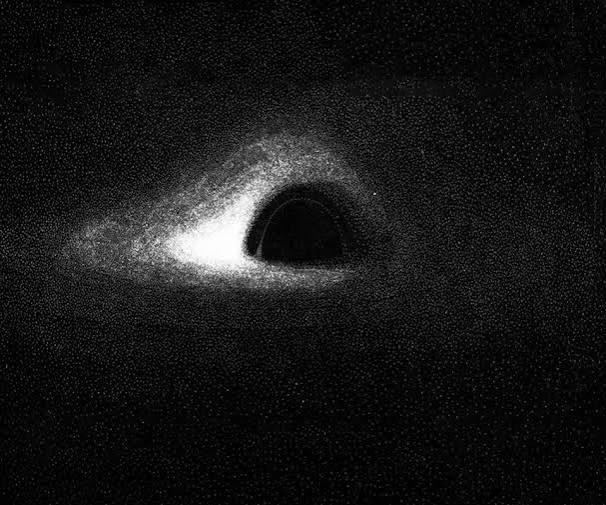
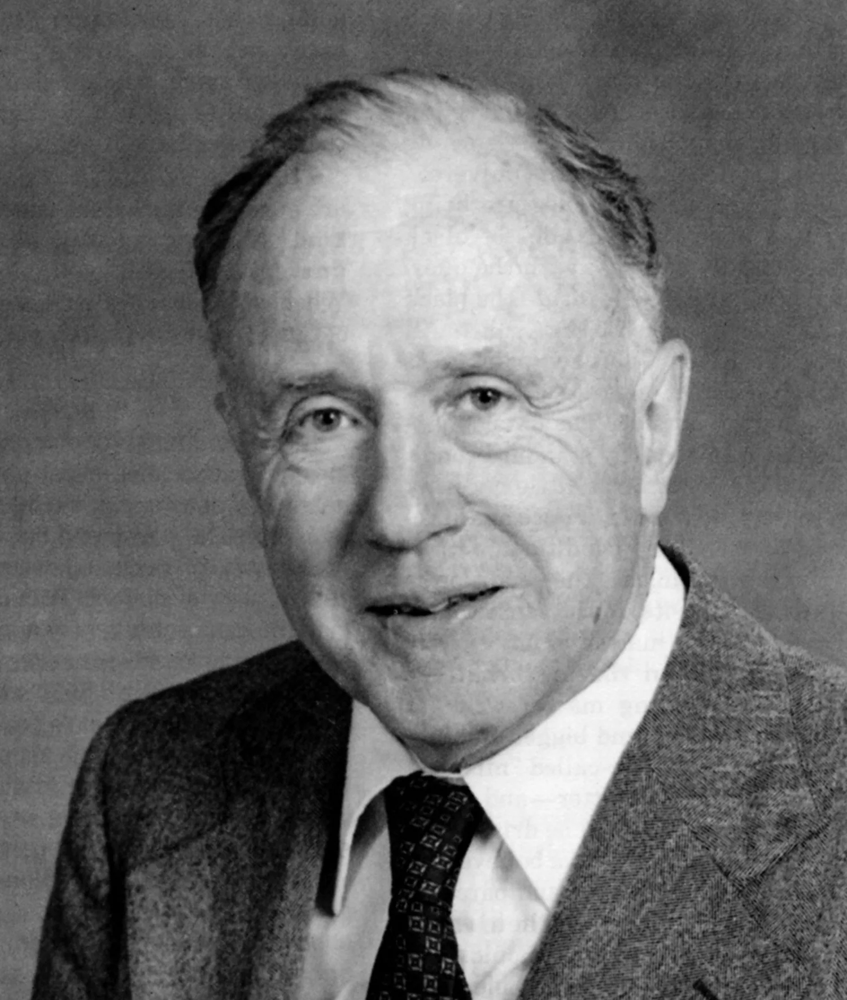

Theories
• General Relativity (Albert Einstein): In 1915, Einstein revolutionized physics by showing that massive objects warp the fabric of space and time. While he initially doubted they could actually exist in reality, his math directly predicted black holes as regions where space curves so sharply that nothing can escape. • The No-Hair Theorem (John Wheeler, Roy Kerr, & others): Developed in the 1960s and 70s, this theory states that a black hole is incredibly simple. Coined by Wheeler, it claims a black hole can be completely described by just three traits: mass, charge, and spin. Everything else about the star that made it disappears. • Hawking Radiation (Stephen Hawking): In 1974, Hawking blended quantum mechanics with gravity to discover that black holes aren't completely black. He proved they slowly leak a faint glow of particles—now called Hawking radiation—meaning they will eventually evaporate and explode over trillions of years. • The Information Paradox (Stephen Hawking vs. Leonard Susskind): Because Hawking claimed black holes eventually evaporate and destroy everything inside, it broke a fundamental rule of physics: information can never be deleted. Susskind challenged this, proposing Black Hole Complementarity, which suggests information is safely stamped onto the surface layer like a hologram.
Albert Einstein

John Wheeler

Stephen Hawking
Leonard Susskind
.jpg)